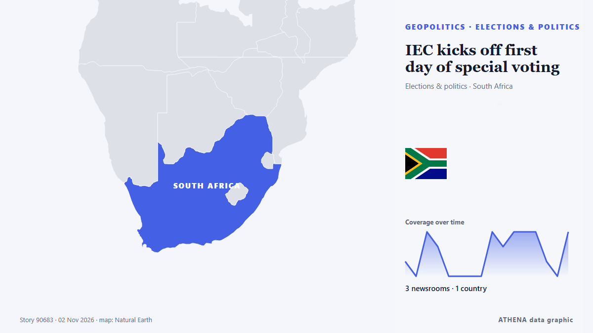

IEC kicks off first day of special voting

IEC officials will conduct home visits for those approved for special voting. de SABC News
Informado de forma independiente por 4 medios de 1 país desde el 1 nov; el primero fue eNCA; la cobertura está en su punto álgido. ATHENA califica el riesgo como moderado (2.5/10), sobre todo por la gravedad del daño descrito y el ritmo de la cobertura. La confianza es del 64 % (moderada): lo corroboran 4 medios independientes, con una fiabilidad media de las fuentes del 74 %. Medios por país: Sudáfrica (31). Cobertura: del 1 nov al 3 nov, 54 horas.
Por qué importa: Los hechos de seguridad y diplomacia pueden alterar alianzas, comercio y mercados mucho más allá de los países implicados.
Qué ha cambiado: 9 informaciones nuevas de 4 redacciones en las 24 horas hasta el 3 nov.
Primer titular: Voting stations are ready special votes
Los titulares se muestran en inglés, tal como se publicaron.
De un vistazo
Seleccionado, puntuado y redactado por la metodología publicada de ATHENA. Ningún editor interviene en eventos concretos. Cómo se elabora ›
| 01 Nov 11:04 UTC | 1 |
|---|---|
| 01 Nov 13:04 UTC | 0 |
| 01 Nov 15:04 UTC | 3 |
| 01 Nov 17:04 UTC | 2 |
| 01 Nov 19:04 UTC | 0 |
| 01 Nov 21:04 UTC | 0 |
| 01 Nov 23:04 UTC | 0 |
| 02 Nov 01:04 UTC | 0 |
| 02 Nov 03:04 UTC | 3 |
| 02 Nov 05:04 UTC | 2 |
| 02 Nov 07:04 UTC | 3 |
| 02 Nov 09:04 UTC | 4 |
| 02 Nov 11:04 UTC | 3 |
| 02 Nov 13:04 UTC | 1 |
| 02 Nov 15:04 UTC | 0 |
| 02 Nov 17:04 UTC | 3 |
| 02 Nov 19:04 UTC | 3 |
| 02 Nov 21:04 UTC | 0 |
| 02 Nov 23:04 UTC | 0 |
| 03 Nov 01:04 UTC | 0 |
| 03 Nov 03:04 UTC | 0 |
| 03 Nov 05:04 UTC | 0 |
| 03 Nov 07:04 UTC | 0 |
| 03 Nov 09:04 UTC | 0 |
| 03 Nov 11:04 UTC | 0 |
| 03 Nov 13:04 UTC | 1 |
| 03 Nov 15:04 UTC | 0 |
| 03 Nov 17:04 UTC | 2 |
| 01 Nov 11:20 UTC | 0.0 |
|---|---|
| 01 Nov 17:39 UTC | 0.8 |
| 02 Nov 19:13 UTC | 2.5 |
| 03 Nov 17:23 UTC | 2.5 |
Por qué estas cifras
Importancia
Riesgo
Confianza
La cobertura: quién informó y cuándo
titular tal como se publicó · abre el original- eNCA · SudáfricaVoting stations are ready special votes
- SABC News · SudáfricaLIVE: IEC media briefing on Special Votes readiness
- SABC News · SudáfricaVoters urged to check their status ahead of special voting
- IOL · SudáfricaIEC deploys 127,000 officials as over 2.6 million South Africans prepare to cast special votes ahead of elections
- eNCA · Sudáfrica2.6 million South Africans set to cast special votes
- SABC News · SudáfricaIEC says 2.6 million voters registered for special ballots
- IOL · SudáfricaSpecial voting starts today: What South Africans need to know
- eNCA · SudáfricaElections 2026: Special voting gets underway on Monday
- IOL · SudáfricaWestern Cape IEC prepares to process nearly 300,000 special votes
- IOL · Sudáfrica2.6 million special voters: IEC ready as two-day voting kicks off
- SABC News · SudáfricaIEC urges voters to check if special vote applications is approved
- eNCA · SudáfricaQualified but jobless: Young doctor puts hope in the ballot
- IOL · SudáfricaSpecial voting starts today: What South Africans need to know
- IOL · SudáfricaIEC gets parliamentary backing as election risks persist
- SABC News · SudáfricaIEC kicks off first day of special voting
- IOL · SudáfricaIEC ballot delays disrupt special voting at 217 Cape Metro voting districts
- SABC News · SudáfricaIEC deploys 250 teams across Amajuba District to conduct home visits
- SABC News · SudáfricaIEC confirms all 1 513 special voting stations operational in FS
- IOL · SudáfricaWATCH | IEC reveals how the first day of special voting unfolded
- IOL · SudáfricaJUST IN| IEC official dies after collapsing at voting station
- IOL · SudáfricaIN PICS: Special voting begins ahead of South Africa’s 2026 municipal elections
- SABC News · SudáfricaIEC says special voting off to a good start
- eNCA · SudáfricaIEC presiding officer dies another hospitalised during first day of special voting
- IOL · SudáfricaIEC Special Votes Day 1: Over 700k votes cast despite delays
- SABC News · SudáfricaMore than 700,000 votes cast on first day of special voting: IEC
- eNCA · SudáfricaIEC reminds voters of do’s and don'ts
- SABC News · SudáfricaFree State IEC flags address discrepancies during special voting
- Daily Maverick · SudáfricaLOCAL ELECTIONS: IEC says ‘aberrations will arise’ during voting but ‘performance will improve’
- SABC News · SudáfricaThose disrupting voting process should be held accountable: IEC
- SABC News · SudáfricaIEC in KZN races to complete 83 000 home visits for special votes
- SABC News · SudáfricaLIVE | IEC media briefing: 03 November 2026